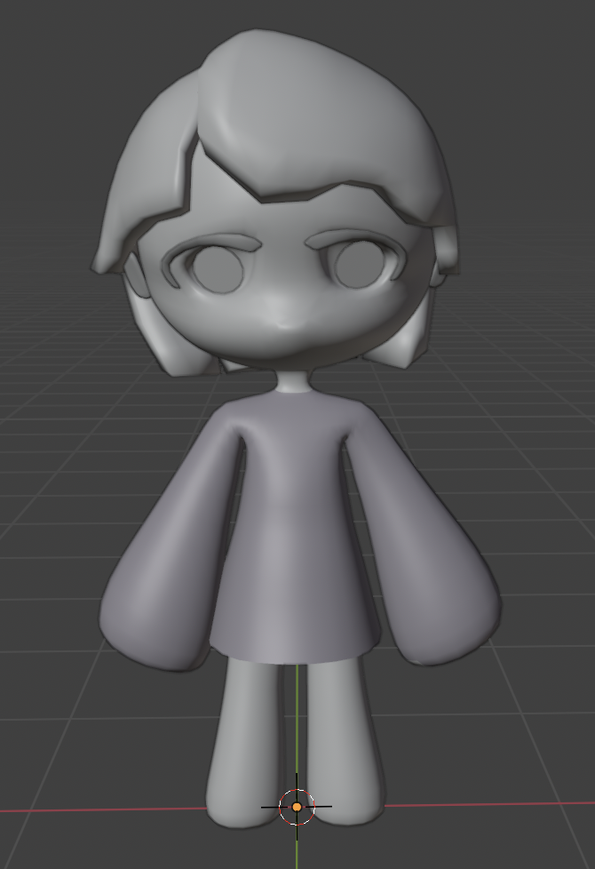
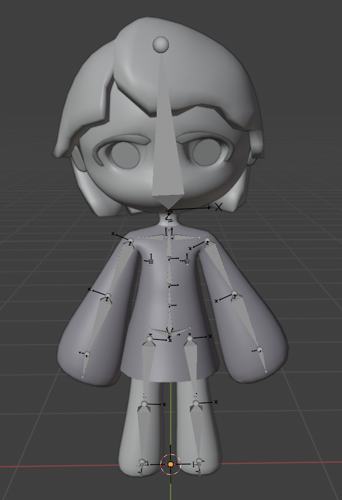
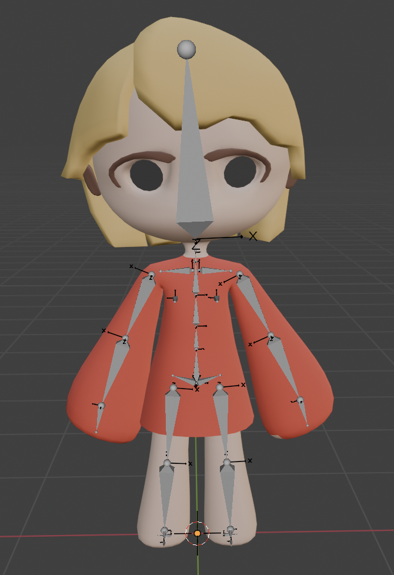
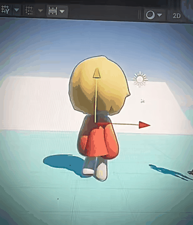
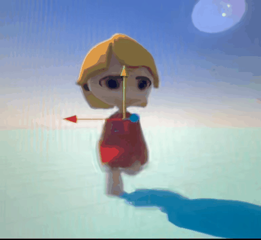
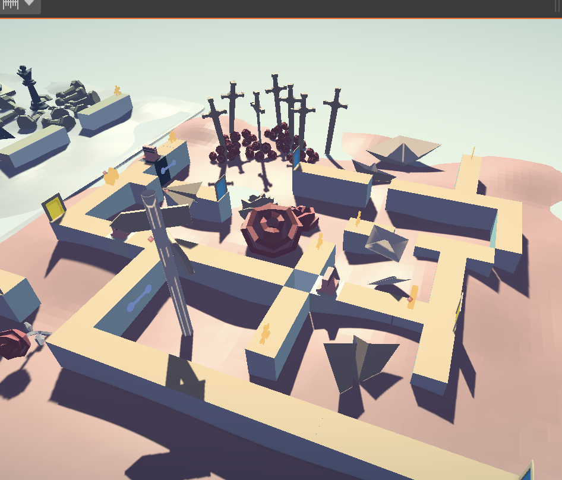
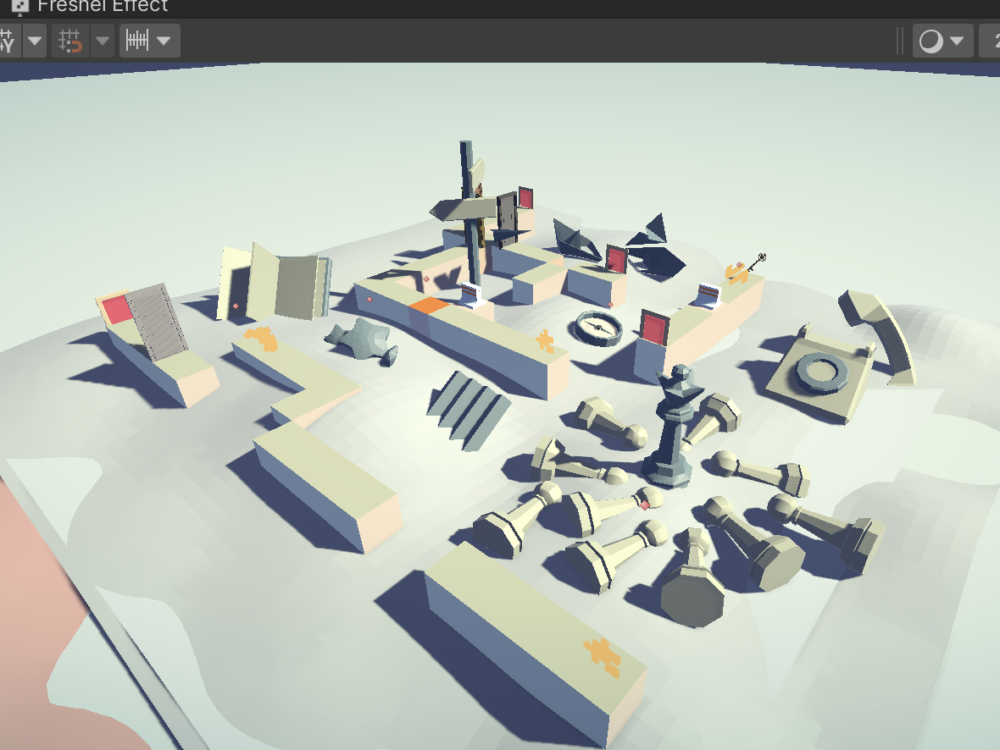
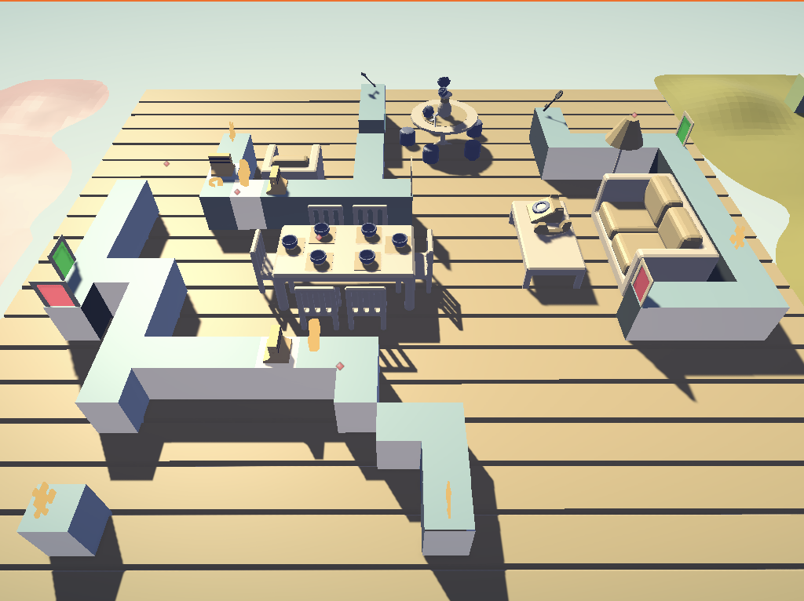
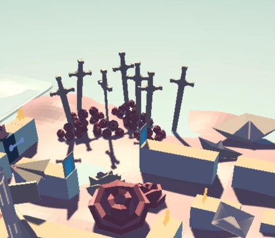

LD58: HeartKeys
Overview
I was the lead artist and technical artist on our team for Ludum Dare 58. We finished in 19th place.
Play HeartKeys in your browser

Credits and final results (my name is highlighted below)


Technical breakdown
My roles: lead artist and technical artist.
I coordinated the art team’s work and handled the technical side of the 3D assets.
Third-person character animation
A fixed camera frames the player, and an animation state machine controls the character’s movement.

Character movement controller source code
Character modeling, rigging, and animation




Unity Avatar setup


Input System
I configured the input actions and wrote the character controller.

Modeling the environment and props
A wide shot of the scene and some close-ups follow.




Looking back
This was the game I made after a year of practice following LD56. We went for a bright, low-poly look that felt comforting. We placed much higher than I expected, and it was lovely to hear how much people enjoyed it.

The biggest challenge was coordinating a large art team entirely online. After spending the first day arguing, we gradually figured out a division of work that suited everyone. For the next jam, I’d like to get better at talking things through with the game designers…
A few details from the level design are worth sharing.
In HeartKeys, each key stands for finding your way through a moment of uncertainty as you grow up. That idea also runs through the main loop: collect new abilities and use them to solve puzzles. We built three levels around school, family, and love. Completing them opens the final level, the future.
We half-buried enormous objects in sand to suggest the character’s inner turmoil. The idea came from a still in a video by Koala on Bilibili.

The family level took a different direction. The designers felt strongly that the buried objects made it too hard to see where to go. We ended up with a tidy, empty two-bedroom apartment. I think its emptiness captured something about being a teenager and feeling misunderstood at home.

My favorite part of the love level is the gathering of roses and swords. The inspiration was a Georgian hillside covered in swords, pictured on the right. The story goes that a small army won a battle there against a much larger force a thousand years ago. The swords became a tribute to their courage.
That’s roughly how teenage love feels to me: the impulse to risk absolutely everything. My teammates took one look at the roses and swords and decided I must have had a very dramatic emo phase.


We chose low poly partly because time was short and I still had plenty to learn. It also helped that I love Dancing Line. (Thank you, Dancing Line!)
That’s about it. Here’s the team who made the game!